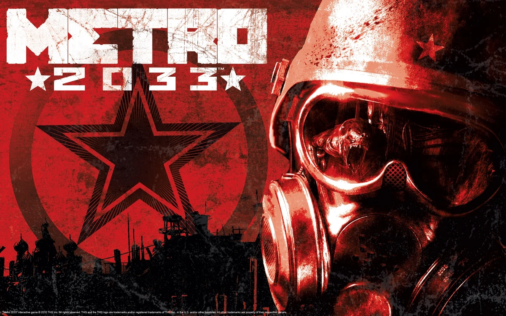

Metro 2033 (укр. Метро 2033) — відеогра, яка поєднує жанри survival horror та шутера від першої особи. Сюжет гри базується на однойменному романі російського письменника Дмитра Глуховського «Метро 2033». Гру розробила українська компанія 4A Games, яку створили вихідці з компанії GSC Game World, що відома у всьому світі завдяки іграм S.T.A.L.K.E.R. та Козаки Компанія THQ — американський видавець проекту — зазначила, що «Метро 2033» виявилася досить прибутковою грою. Переважна більшість продажів припала на ПК-користувачів. Офіційна українська локалізація вийшла 26 серпня 2014, разом з покращеною версією Metro 2033 Redux для Microsoft Windows, PlayStation 4, та Xbox One. Сюжет гри загалом повторює книгу Дмитра Глуховського. Події розгортаються в Москві через 20 років після глобальної ядерної війни. Вцілілі містяни знайшли собі притулок в Московській підземці. Головний герой гри, Артем, вирушає виконати доручення аби врятувати свою домівку від нападів мутантів.
